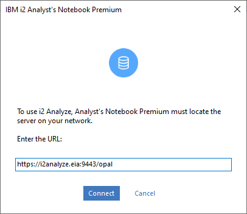
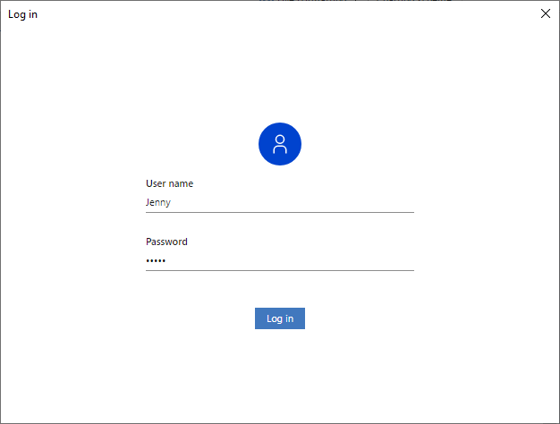
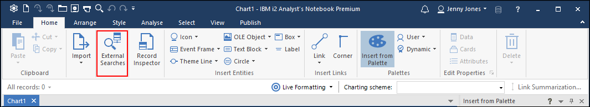
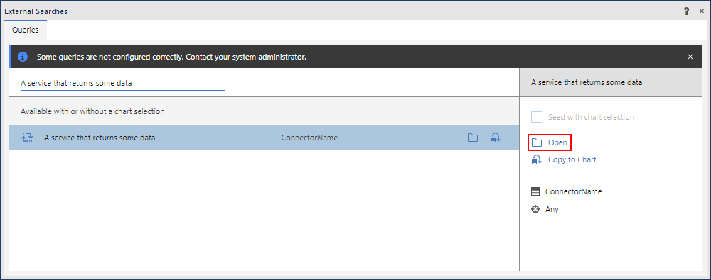

Getting started
Every connector that you develop with the i2 Connect Node SDK consists of a connector server and one or more services:
The connector server, which i2 provides, handles communication with the i2 Connect gateway and implements the API that your services use.
The services, which you write, display an interface to users and are responsible for interacting with the external data source.
The connector server depends on version 14 (or above) of the Node.js run-time environment. You can download and install Node.js from the project website.
Creating a connector project
To create a connector project, use either of the following commands:
npm
npm init @i2analyze/connector my-connector
yarn
yarn create @i2analyze/connector my-connector
where my-connector is the identifier of the connector and the name of the directory to create. You can provide a different value, but the rest of this page assumes that you used my-connector.
Both commands create a directory inside the directory that the command was run from. They generate the initial project structure, and install the transitive dependencies. The initial structure includes a connector server with a single service and a sample connector schema.
Targeting an older version of i2 Analyze
The npm and yarn commands both install the latest version of the connector server, which is compatible with the latest version of i2 Analyze. To target an earlier version of i2 Analyze, you can replace the connector server with the version that you need, according to the compatibility table. For example:
npm install @i2analyze/i2connect@2.2.1
This command installs the package containing version 2.2.1 of the i2 Connect Node SDK, which is compatible with version 4.4.1 of i2 Analyze.
Running the server during development
After creation, the connector server and its service are ready to run with no modifications. To run the server in development mode:
cd my-connector
npm start
In this mode, the server monitors the project source files for changes, and rebuilds the service when necessary.
Configuring i2 Analyze to use the connector
To develop connectors for the i2 Connect gateway successfully, you need an i2 Analyze server instance that you can use for testing and debugging.
If you don't have an i2 Analyze server instance, you can create a local one that runs in a Docker container, as described here. Be sure to use the i2c deployment pattern when you create the configuration.
With i2 Analyze running, you need to add the connector that you just started to your development environment:
If you created the server instance in a Docker container, add the connector as described here. Use the External template to create the connector image.
Note: When you configure your connector in
connector-definition.json, be sure to set the connectoridto bemy-connector(or the value you used), and thebaseUrltohttp://host.docker.internal:3000. For example:{ "id": "my-connector", "name": "My Connector", "description": "My Connector Description", "configurationPath": "/config", "gatewaySchema": "", "baseUrl": "http://host.docker.internal:3000", "type": "external" }If your i2 Analyze server is not running in a container, you can use the i2 Analyze toolkit to add the connector, as described here.
Reloading connector configuration from i2 Analyze
In order for i2 Analyze to pick up configuration changes to the connector, you can use the Admin Console to reload the i2 Connect gateway:
Open a web browser and navigate to
https://i2analyze.eia:9443/opal/admin#/connectors.If you are prompted to log in, enter
JennyandJennyas the username and password.Click the Reload gateway button.
Testing the service in Analyst's Notebook
When the connector server is running, you can connect to it and use its service from Analyst's Notebook.
Start Analyst's Notebook.
Click Log In.

Enter the URL of the connector server that you set up earlier.

Enter the user name and password, which are "Jenny" and "Jenny".

Click External Searches.

Locate the service named "A service that returns some data", and click Open to open and run the service.

The service runs and presents its results. To add them to the chart, select them all and click Copy to Chart.

That's all you need to create, build, deploy, and test a simple service with the i2 Connect Node SDK. Every project that you create with the SDK starts this way. The rest is all about building on these foundations.
Debugging the connector
It is possible to debug the connector live using Microsoft Visual Studio Code ("VS Code"). To do this, follow these steps:
Stop the
npm startprocess if it's still running.Open a new instance of VS Code.
Click File | Open folder.
Select the connector root folder.
Click Run and Debug.
Select Attach to i2 Connect development server from the drop-down.
Click Start Debugging (F5).
Add breakpoints into the service source code where you want execution to pause.
Run the service from within Analyst's Notebook.